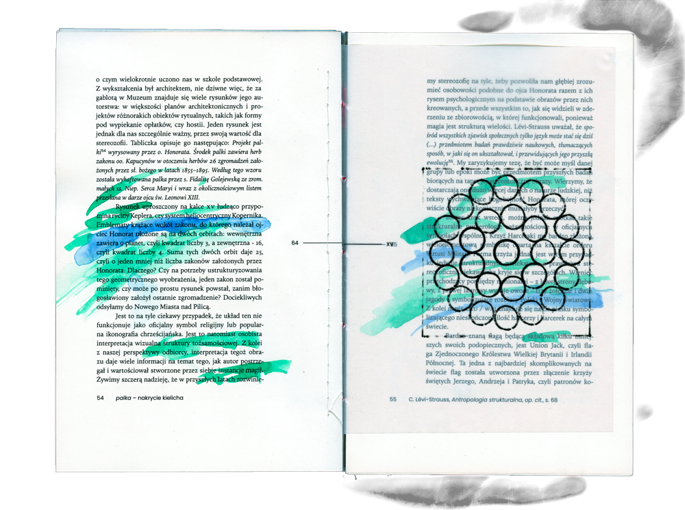
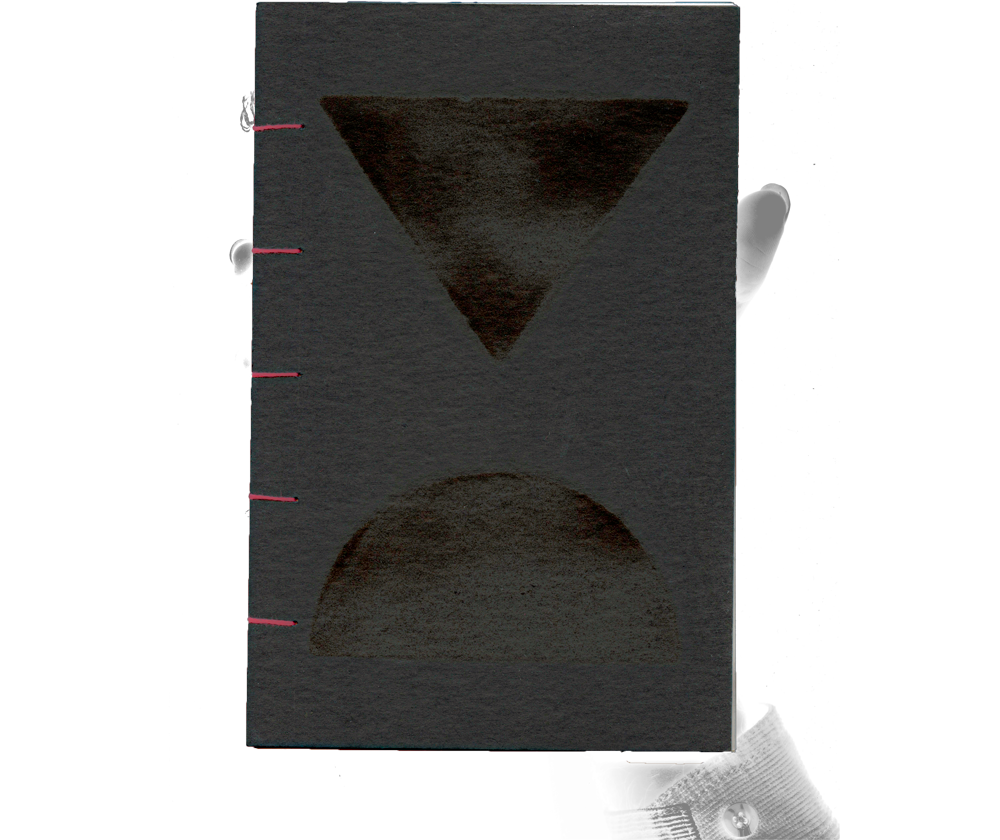
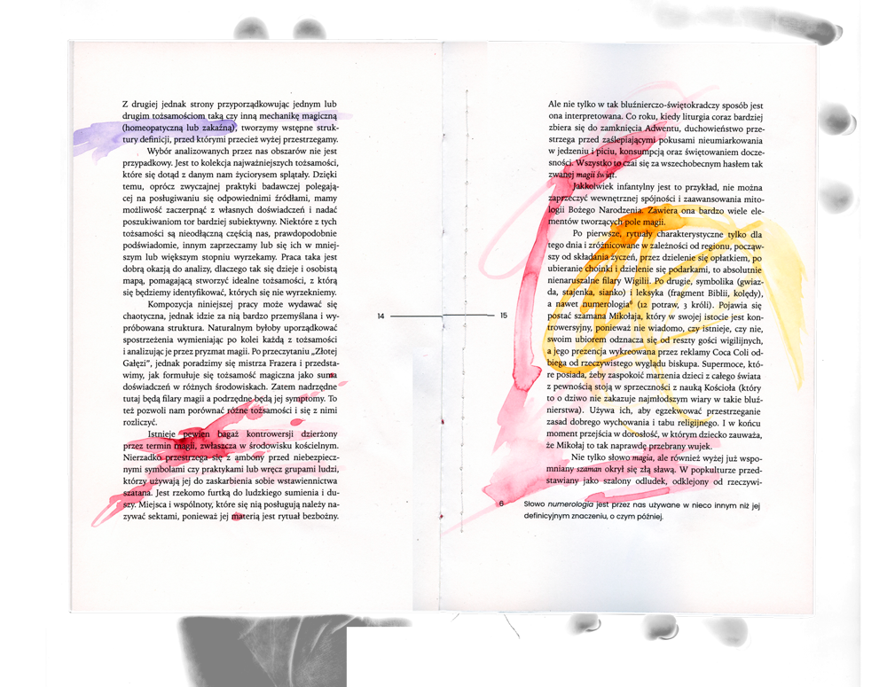
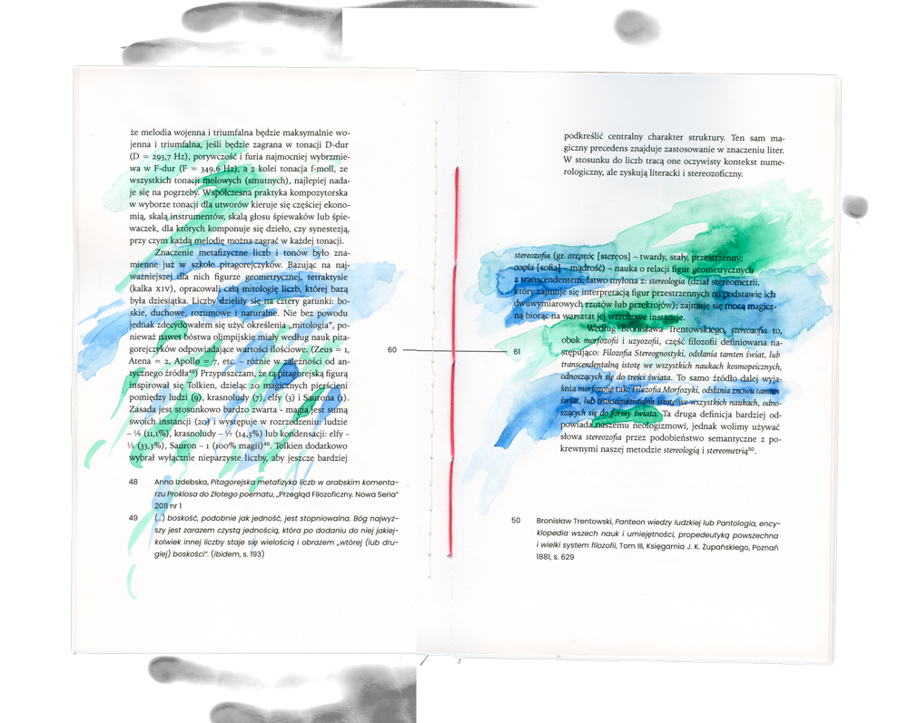

stereozofia (gr. στερεός [stereos] – 'rigid', 'constant', 'dimensional'; σοφία [sofia] – 'wisdom') – the study of the relationship between geometric figures and the transcendent; easily confused with: stereology (a branch of stereometry that deals with the interpretation of three-dimensional figures on the basis of their two-dimensional projections or cross-sections); it deals with magical power by examining its visual manifestations


This book is my master thesis that wrote under the supervision of Anna Szyjkowska Piotrowska at the end of my studies at Graphic Arts Department of the Academy of Fine Arts in Warsaw. I produced only three copies. I sew each copy of the book together using a coptic stitch, because the contents of each one also got a unique touch - watercolour markings that correspond to the text. I write about magical thinking and magic, which I define in a couple of different ways with each definition having its own corresponding colour of paint.


© 2022 Mikołaj Grabowski